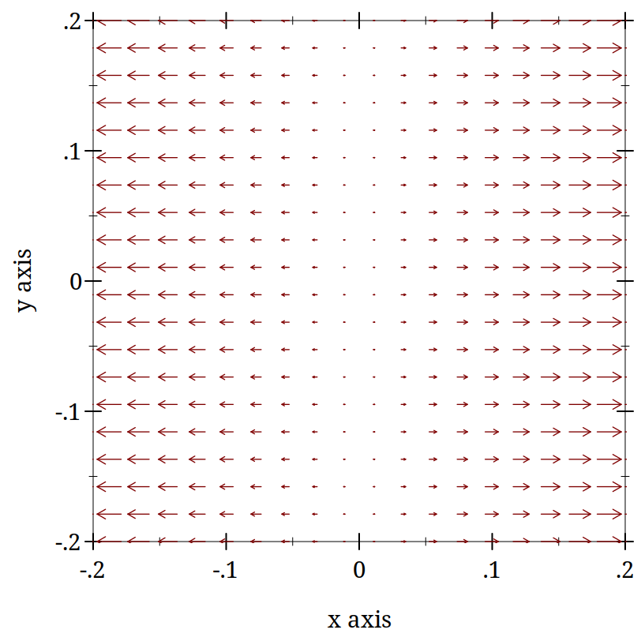
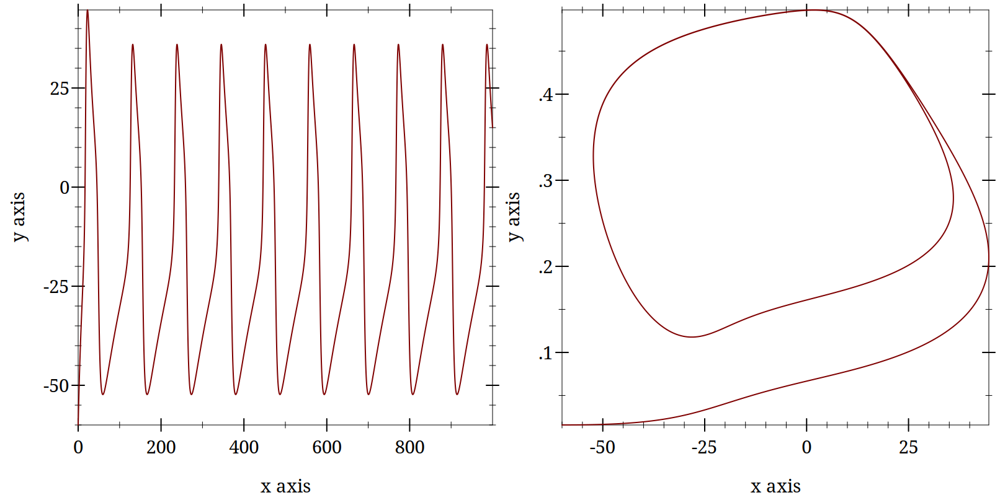
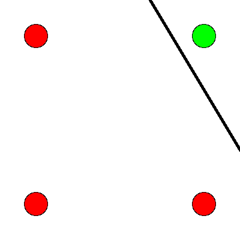
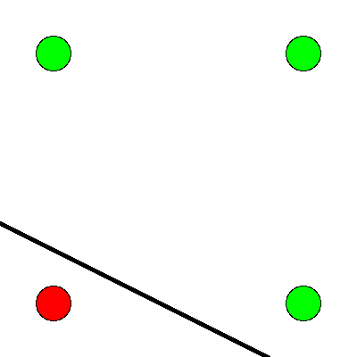

4 Neural Networks
4.1 Introduction to Linear Algebra and Neural Networks
4.1.1 Linear Algebra Goals
What is a neural network?
What mathematics are needed to build a neural network?
How can neural networks help us understand cognition?
As a first illustration of some of the key ideas we will execute a simple cellular automata rule. What I hope to emphasize through this exercise is that whenever you can get the computer to do a repetitive task do so. It will do it much better than you. And even if it takes you days to get the program right for many task you will quickly save the time in the long run. Second, we are using a simple rule (as you will shortly see). But even though the rule is local it yields impressive global structure. And very slight tweaks in this local rule can lead to large macroscopic changes. While the variation in our rule is very limited the array of behaviors we can observe is vast. Match these features to facts about neurons. Extend them to what you believe will be their application in neural networks.
4.1.2 Drawing Cellular Automata
This activity has several stages. For the first stage make sure you can load the file into Dr Racket and that it runs.
Next, pick a number between 0 and 255 inclusive. In your interactive window use the function rule-tester to generate the input-output pairing for your rule like so.
> (rule-tester 22 test-set)
in (w w w) out w
in (w w b) out b
in (w b w) out b
in (w b b) out w
in (b w w) out b
in (b w b) out w
in (b b w) out w
in (b b b) out w
Use your rule and a piece of graph paper to implement your rule.
Color a single black square in the middle of the top row. Then moving down one row and working left to right implement your rule by coloring in the appropriate square.

For example, if the boxes 1, 2, and 3 were ’w, ’w, and ’b I could color the square with the question mark black. Then I would move one to the right and square 2 would become my new number 1 and so on.
Complete several rows following your rule.
What you have probably noticed is that this is tedious and mistake prone, but your rule is a good example of a function. A function can be conceived as a set of pairs. The first element of the pair is the input, and the second element of the pair is the output. Functions require that each input element be unique. Implementing your rule makes you the metaphorical neuron deciding whether or not to fire (color the square black) based on the input you receive from neighboring neurons.
Having learned how tedious and error prone this process explore some of the other rules using the functions in ca.rkt. The simplest method is to use the function d-r-a <some-rule-number>. You can adjust the size and scale with various optional arguments and even print it to a file if you find one you like. Here is one of my favorites as a demonstration.
> (d-r-a 110 #:num-rows 100 #:num-cols 100 #:scale 3) 
Repetitive actions are hard. We (humans) make mistakes following even simple rules for a large number of repeated steps. Better to let the computer do it since that is where its strengths lie.
Complex global patterns can emerge from local actions. Each neuron is only responding to its immediate right and left yet global structures emerge.
These characteristics seem similar to brain activity. Each neuron in the brain is just one of many. Whether a neuron spikes or not is a consequence of its own state and its inputs (like the neighbors in the grid example).
From each neuron making a local computation, global patterns of complex activity can emerge.
Maybe by programming something similar to this system we can get insights into brain activity.
4.1.2.1 Comments on the programmatic implementation
The code in ca.rkt involves a lot of looping. I used for loops extensively, though sometimes these were for/fold variants. We need to inch along the columns and down the rows. The plotting used the built in functionality of racket for generating pictures as output.
The potentially more tricky part was going from a number (in decimal) to a binary representation that had the right number of places occupied. I ended going back and forth between strings and lists to get what I wanted. This was undoubtedly a kludge, but there is a slogan to first get it working, and then make it better. Trying to be too perfect and too elegant can cost you time in the long run. It is often easier to revise a functioning program then write one from the start.
Initially I did not have all the testing code, because I was adapting code I had written in the past. However, when things did not work it turned out I went faster by slowing down and writing code that allowed me to inspect the state of my various variables, and individually try out the small functions on test input.
4.1.3 More Lessons from Cellular Automata
Cellular automata demonstrate some basic lessons that we will make use of when thinking about neural networks. One of these points is that there may be simple representations for complex entities. If we can find the right language for representation we may get concision and repeatability as by-products. This is demonstrated by the naming convention for the rules of cellular automata.
In emphasizing that local decisions can produce interesting global effects it may be interesting to examine other similar uses of the cellular automata idea. One famous and visually pleasing one is the Game of Life.
The analogy of automata to simple neurons may be deeper than at first it appears. Some very famous thinkers connected the two. One of the most brilliant people of all time, John von Neumann, was working on a book about automata and the brain at the time of his death. I have linked to a commentary in case you are interested in reading further see Claude Shannon (pdf) as well as to a pdf copy of the book: The Computer and the Brain).
A contemporary mathematician and the inventor of the Mathematica software system also believes that cellular automata may be a theory of everything. See what Stephen Wolfram thinks.
4.2 The Math That Underlies Neural Networks?
4.2.1 Linear Algebra
The math at the heart of neural networks and their computer implementation is linear algebra. For us, the section of linear algebra we are going to need is mostly limited to vectors, matrices and how to add and multiply them.
4.2.1.1 Important Objects and Operations
Vectors
Matrices
Scalars
Addition
Multiplication (scalar and matrix)
Transposition
Inverse
4.2.1.1.1 Adding Matrices
To gain some hands on familiarity with the manipulation of matrices and vectors we will try to do some hand and programming exercises for some of the fundamental operations of addition and multiplication. We will also thereby learn that some of the rules we learned for numbers (such as a * b = b * a) do not always apply in other mathematical realms.
There are in fact many ways to think about what a vector is.
It can be thought of as a column (or row of numbers). More abstractly it is an object (arrow) with magnitude and direction. Most abstractly it is anything that obeys the requirements of a vector space.
For particular circumstances one or another of the different definitions may serve our purposes better. In application to neural networks we often just use the first definition, a column of numbers, but the second can be more helpful for developing our geometric intuitions about what various learning rules are doing and how they do it.
Similarly, we often just consider a matrix as a collection of vectors or as a rectangular (2-D) collection of numbers.
4.2.1.1.2 Activity
Look up how racket handles matrices and vectors. Here is a very simple file to try and get started.
Important: vectors are a special datatype in Racket, and the vector type is probably not what you want to be using. Look for matrices and linear algebra.
Make two arrays and make them the same sizeWhat is the size of a matrix?.
Add them together in both orders (A + B and B + A). How does one add an array that itself has numerous different numbers?
Then do the same for multiplication. Note that there are particular requirements for the sizes of matrices in order that it is possible to multiply them in both directions. What is that rule?
What is the name for the property of having A*B = B*A?
4.2.1.2 Common Notational Conventions for Vectors and Matrices
Vectors tend to be notated as lower case letters, often in bold, such as \mathbf{a}. They are also occasionally represented with little arrows on top such as \overrightarrow{\textbf{a}}.
Matrices tend to be notated as upper case letters, typically in bold, such as \mathbf{M}.
Good things to know: what is an inner product? How do you compute it in racket?
4.2.2 What is a Neural Network?
What is a Neural Network? It is a brain inspired computational approach in which "neurons" compute functions of their inputs and pass on a weighted proportion to the next neuron in the chain.
Figure 6: simple schematic of the basics of a neural network. This is an image for a single neuron. The input has three elements and each of these connects to the same neuron ("node 1"). The activity at those nodes is filtered by the weights, which are specific for each of the inputs. These three processed inputs are combined to generate the output from this neuron. For multiple layers this output becomes an input for the next neuron along the chain.
4.2.2.1 Non-linearities
The spiking of a biological neuron is non-linear. You saw this in both the integrate and fire and Hodgkin and Huxley models you programmed. The lines on those plots you created are not, for the most part, straight. Perhaps the simplest way to incorporate a non-linearity into our artificial neuron is to give it a threshold, like we did for the integrate and fire model. When activity exceeds the threshold (which we will usually designate with a capital Greek Theta \Theta then the neuron is set to 1 and if it is not firing it is set to 0 (like the "w" → 0; "b" → 1 mapping we used for the cellular automata).
What this equation shows is that Inputs (the Is) are passed to a neuron. Those inputs have something like a synapse. That is designated by the w’s. Those weights are how tightly the input and internal activity of our artificial neuron is coupled. The reason for all the subscripts is to try and help you see the similarity between this equation and the inner product and matrix multiplication rules you just worked on programming. The activity of the neuron is a sort of internal state, and then, based on the comparison of that activity to the threshold, you can envision the neuron spiking or not, meaning it has value 1 or 0. Mathematically, the weighted sum is fed into a threshold function that compares the value to a threshold \Theta, and passes on the value 1 if it is greater than the threshold and 0 (sometimes -1 rather than zero is chosen for the inactive state because there are certain computational conveniences in doing so).
To prepare you for the next steps in writing a simple percetron (the earliest form of artificial neural network), you should try to answer the followign questons.
What, geometrically speaking, is a plane?
What is a hyperplane?
What is linearly separability and how does that relate to planes and hyperplanes?
One of our first efforts will be to code a perceptron to solve the XOR problem. In order for this to happen you need to know a bit about Boolean functions and what an XOR problem actually is.
Examples of Boolean Functions and How They Map onto our Neural Network Intuitions
The "AND" Operation/Function
Figure 7: The and operation is true when both its inputs are true.

Figure 8: The or operation is true if either or both of its inputs are true.

Figure 9: The xor is true when one or the other, but not both of the inputs are true. It is exclusively an or function.

This short article provides a nice example of linear separability and some basics of what a neural network is.
4.2.2.1.1 Exercise XOR
Using only not, and, and or operations draw the diagram that allows you to compute in two steps the xor operation. You will need this to code it up as a perceptron.
4.2.2.2 Connections
Can neural networks encode logic? Is the processing zeros and ones enough to capture the richness of human intellectual activity?
There is a long tradition of representing human thought as the consequence of some sort of calculation of two values (true or false). If you have two values you can swap out 1’s and 0’s for the true and false in your calculation. They even seem to obey similar laws. If you the conjunction (AND) of two true things it is only true when both are true. If you take T = 1, then T ∧ T is the same as 1~\times~1.
We will next build up a simple threshold neural unit and try to calculate some of these truth functions with our neuron. We will build simple neurons for truth tables (like those that follow), and string them together into an argument. Then we can feed values of T and F into our network and let it calculate the XOR problem.
4.2.2.3 Boolean Logic
George Boole, Author of the Laws of Thought
Read the book on Archive.org
Read about George Boole
4.2.2.4 First Order Logic - Truth Tables
Or
Pr A |
| Pr B |
| Or |
0 |
| 0 |
| 0 |
0 |
| 1 |
| 1 |
1 |
| 0 |
| 1 |
1 |
| 1 |
| 1 |
And
Pr A |
| Pr B |
| AND |
0 |
| 0 |
| 0 |
0 |
| 1 |
| 0 |
1 |
| 0 |
| 0 |
1 |
| 1 |
| 1 |
Nand
Pr A |
| Pr B |
| NAND |
0 |
| 0 |
| 1 |
0 |
| 1 |
| 1 |
1 |
| 0 |
| 1 |
1 |
| 1 |
| 0 |
4.3 Perceptrons
4.3.1 Goals
The goal for this file is to share the idea of a perceptron, the mathematical formula for updating one, and iniate the process of coding a simple implementation that we will adapt to the delta rule.
4.3.2 Perceptron History and Implementation
The perceptron was the invention of a psychologist, Frank Rosenblatt. He was not a computer scientist. Though he obviously had a bit of the mathematician in him.

{kind=link}
Details to be found on the wikipedia page.
Those interested in some interesting background reading could consult his over 600 page book entitled Principles of Neurodynamics or this historical review.
From the foreward of that book we have the following quote:
"For this writer, the perceptron program is not primarily concerned with the invention of devices for "artificial intelligence", but rather with investigating the physical structures and neurodynamic principles which under lie "natural intelligence". A perceptron is first and fore most a brain model, not an invention for pattern recognition. As a brain model, its utility is in enabling us to determine the physical conditions for the emergence of various psychological properties."
4.3.3 The Perceptron Rules
The perceptron rules are the equations that characterize what a perceptron is, and what it does in contact with experience, so that it can learn and revise its behavior. A lot can be done with these simple equations.
I = \sum_{i=1}^{n} w_i~x_i
If I \ge T then y = +1 else if I < T then y = -1
If the answer was correct, then \beta = +1, else if the answer was incorrect then \beta = -1.
The "T" in the above equation refers to the threshold. This is a user defined value that is conveniently, and often made, to be zero.
Updating is done by \mathbf{w_{new}} = \mathbf{w_{old}} + \beta y \mathbf{x}
4.3.4 You Are The Perceptron
This is a pencil and paper exercise. Before coding it is often a good idea to try and work the basics out by hand. This may be a flow chart or a simple hand worked example. This both gives you a simple test case to compare your code against, but more importantly makes sure that you understand what you are trying to code. Let’s make sure you understand how to compute the perceptron learning rule, but doing a simple case by hand.
Beginning with an input of \begin{bmatrix}0.3 \\ 0.7 \end{bmatrix}, an initial set of weights of \begin{bmatrix}-0.6 \\ 0.8 \end{bmatrix}, and a class of 1. Compute the value of the new weight vector with pen and paper.
4.3.4.1 A simple data set
For these data there are two dimensions or features (the first and second columns) and the third colum represents their class.
(matrix [[ 0.3 0.7 1.0] [-0.5 0.3 -1.0] [0.7 0.3 1.0] [-0.2 -0.8 -1.0]])
Using the starting weight above write code to iteratively compute a new weight from each input and it’s class and using the current weight. If you can, save each updated weight so you can see how they change, but if you can’t still try to use a for construct to iterate through these data and see how the weights change.
In broad outlines you will need to decide on a data structure. You can use a matrix as I have here, but it may be easier to just use a list to start. For example (list (list 0.3 0.7) 1.0). The first element of the list would be the input data and the last item the desired class. You could create a list of list of such elements to capture the matrix I have displayed above.
This progressive updating of the weight vector is the learning. Note that sometimes our initial weight vector classifies incorrectly. How does it do after one complete cycle through all the training examples?
> (let ([in-class -1.0]) (if (= (if (>= (matrix-ref (matrix* (row-matrix [-0.6 0.3]) (col-matrix [1.2 2.3])) 0 0) 0.0) 1 -1) in-class) "correct" "incorrect")) "correct"
4.3.4.2 What does it all mean? How is the Perceptron Learning?
(wt-plot (one-loop-through-data my-data (col-matrix [-0.6 0.8]))) 
These functions and the my-data are in the file perceptron-rule.rkt. Each time through the perceptron rule I compute the new weights and use the first position as the ’x’ value and the second position as the ’y’ value to plot vectors on an ’x-y’ plane. You can imagine that as we iterate through the data we are rotating the vectors around an origin. The decision plane is perpendicular to the vectors and anchored at the bottom of the arrows. If you compare this to the location of the data points (which you can add to the plot by editing the functions in the linked file) you will see that the rule is learning to find the decision plane that puts all of one class on one side of the line and all of the other class on the other side. That is why it is limited to problems that are linearly separable!
4.3.4.3 Bias
These data were selected such that the base of the vector could separate them while anchored at zero. However, for many data sets you not only need to learn what direction to point the vector, but you also need to learn where to anchor the vector. This is done by including a bias weight. Add an extra dimension to your weight vector and your inputs. For the inputs it will just be a constant value of 1.0, but this extra, bias weight, will also be learned and allows you to achieve, effectively, a translation away from the origin to be able to separate points that are more heterogeneously scattered.
4.3.4.3.1 Geometrical Thinking
What is the relation between the inner product of two vectors and the cosine of the angle between them?
What is the *sign* for the cosine of angles less than 90 degrees and those greater than 90 degrees?
How do these facts help us to answer the question above?
Why does this reinforce the advice to think /geometrically/ when thinking about networks and weight vectors?
4.3.5 The Delta Rule - Homework
The Delta Rule is another simple learning rule that is a minimal variation on the perceptron rule. It is used more frequently, and it has the spirit of Hebbian learning, which we will learn more about soon. The homework asks you to write code to test and train an artificial neuron using the delta learning rule.
For an easy start create some pseudo random linearly separable points on a a sheet of paper. Label one population as 1 and the other population as -1.
For a more challenging set-up create the data programatically using random numbers and some method that allows you to vary how close or distant the points are to the line of separation, and how many points there are to train on.
The Delta Learning rule is:
\Delta~w_i = x_i~\eta(desired - observed)Submit your code that has your test data in it. Start with an initial random weight and use the delta rule to learn the correct weighting to solve all your training examples. Then test on a new set of points that you did not test on but that are classified according to the same rule. Your code should assess how well the trained rule classifies the test data.
I have some code for the perceptron that might give you some code you could adapt if you have trouble getting started.
Perceptron Bibliography
4.4 Hopfield Networks
4.4.1 Not all Networks are the Same
Feedforward
Recurrent
Convolutional
Multilevel
Supervised
Unsupervised
The Hopfield network (Hopfield 1982) has taught many lessons, both practical and conceptual. Hopfield showed physicists a new realm for their skills and added recurrent (i.e. feedback) connections to network design (output becomes input). He changed the focus from network architecture to that of a dynamical system. Hopfield showed that the network could remember and it could do some error correction, it could reconstruct the "right" answer from faulty input.
4.4.1.1 How does a network like this work?
Each node has a value.
Each of those arrowheads has an associated weight.
The line with the "x" indicates that there are no self connections.
All other connections for all other units are present and go in both directions.
4.4.1.2 Test your understanding:
Tell me what the input for a network like this with four nodes should look like it terms of the linear algebra constructs we have talked about.
A weight is a number associated to each connection. Tell me what the weights should look like in terms of the linear algebra constructs.
How might we conceive of "running" the network for one cycle in terms of the above.
4.4.1.3 A Worked Example
Inputs can be thought of as vectors. Although I have drawn the network like a square that shape is really independent of the structure of data flow. Each node needs an input and each node will need a weighted contact to all the other nodes. Consider the following two input patterns and the following weight matrix.
Ask yourself, how do I compute the output? Which comes first: the matrix or the input vector and why?
Hopfield networks use a threshold rule. This non-linearity is, at least metaphorically, like the threshold that says whether a neuron in the brain or in our integrate and fire model fires. For the Hopfield network our threshold rule says:
\Theta will represent the value of our threshold and for now let’s set \Theta = 0.
To make sure you understand the mechanics of this type of network you should first calculate the output to each of the two input patterns.
Then, to test your intuition, you should guess what output you would get for an input of \{1,0,0,0\}^T. Calculate it.
To understand why this is the case, ask yourself whether A or B is closer to this test input? This will hopefully lead you to reflect on what it means, in this context, for one vector to be "closer" to another.
4.4.1.3.1 Distance Metrics
Metrics relate to measurement. For some operation to be a distance metric it should meet three intuitive requirements and one that is maybe not as obvious. To measure the distance between two things we need an operation that is binary. That is, it takes two inputs. In this case that would be our two vectors. It’s result should always be Non-negative. A negative distance would clearly be meaningless. Our output should be symmetric. Meaning that d(A,B)~d(B,A). The distance from Waterloo to Toronto ought to come out as the same as going from Toronto to Waterloo. Our metric should be reflexive. The distance from anything to itself ought to be zero. Lastly, to be a distance metric, our operation must obey the triangle inequality
Now, to understand what the network did, consider your distance measure to be the number of mismatched bits. This metric is called the Hamming distance.
Reminder: Don’t forget to think about geometry and dynamics.
For perceptrons we talked about how the weight vector moved the direction it pointed. Here we don’t have the weight vector moving, but you can visualize what is happening as updating a point in space. When we first input our four element vector we have a location in 4-D space. We multiply the first row of our weight matrix against our column of the input vector and we see, in effect, what is the effect on our first element (node) of all the other weighted inputs coming in to it. We then "update" that location. Maybe we flip it from a 1 to a zero (or vice versa). Then we try the next row of the weight matrix to see what happens to the second element. As we change the values of our nodes we are creating new points. The sequence of points is a trajectory that we are tracing in the input space. In this simple situation here we only require one pass to reach the final location, but in other settings we might not. In that case we just keep repeating the process until we do. One of the wonderful insights that Hopfield had was that by conceptualizing this process as an "energy" he could mathematically prove that the process would always reach a resting place.
4.4.1.4 Hebb’s Outer Product Rule
Why is this learning rule called "Hebb’s"? And if you don’t know who Hebb is let’s take a moment to figure that out.
Does it matter that the (\mathbf{W}) comes first?
What is an outer product? Can you compute one with racket?
4.4.2 Hopfield Homework Description: Robustness to Noise
Create a small set of random data for input patterns.
Generate the weights necessary to properly decode the inputs.
Conceive of a way to randomly corrupt the inputs. Perhaps by flipping some bits and show that your network does correctly decode the uncorrupted inputs.
Report the accuracy of the output. Explore how the length of the input vector and the number of bits your "flip" impact performance.
Make the input patterns 2-d, square and of size "n".
Use a bipolar system and have, roughly, equal numbers of +1s and -1s in your patterns.
Make a few of them and store them in some sort of data structure.
Using those patterns, compute the weight matrix with the following equation:
w_{ij} =\frac{1}{N} \sum_{\mu} value^\mu_i \times value^\mu_jWhere N is the size of the patterns, that is how many "neurons". \mu is an index for each of the patterns, and i and j refer to the neurons in the pattern \mu. Do this in code. The computer is good for this manual, repetitive sort of stuff.Program an asynchronous updating rule, run your network until it stabilizes, and then show that you get back what you put in.
Then do the same for at least one disrupted pattern (where you flipped a couple of bits around.)
Hopfield Bibliography
J. J. Hopfield. Neural networks and physical systems with emergent collective computational abilities. PNAS 79, pp. 2554–2558, 1982. https://www.pnas.org/doi/abs/10.1073/pnas.79.8.2554 |
4.5 Backpropagation
4.5.1 Warm up questions
What is a neural network?
What is the difference between supervised and unsupervised learning? Give an example of each?
What is the activation function we have used for the perceptron and delta rule networks?
What role does "error" play in the perceptron and delta learning rules?
For a multilayer network how do you know how much of the "error" to pass back into the deeper layers of the network?
4.5.2 Sigmoid Functions
Our prior networks have been forms of threshold units. We check to see if our activation cleared a certain hurdle, and if so, set its value to 1 or -1.
While this step-function approach was used originally, it is more common now to scale the output continuously between a lower and upper bound. One of the intuitions is that this is like a probability that the neuron might fire.
> (begin (define (sig x) (/ 1.0 (+ 1 (exp (* -1.0 x))))) (plot (function sig (- 5) 5) #:title "A sigmoid function.")) 
\frac{1}{1+e^{-z}}
4.5.2.1 A few questions about sigmoid functions
Why is it called "sigmoid?"
What advantage does it offer over a threshold function?
Is it the only "sigmoid" function? Does it have other names?
Can you guess an an advantage to this particular form of the equation?
How do use this with a neural network, i.e. what is z?
Getting ready to put things together. Can you write a small snippet of racket code that takes a vector of inputs, appends a bias input, combines this with a suitable weight vector using the scalar product and pipes the result though the sigmoid function? Think about equations qualitatively.
Remember, one of the goals of computational modeling is to get an insight into the implications of our ideas and theories. Sometimes this means running a model to see what comes out of it. But it can also mean that we look at the equations that go into the model and think about their "behavior" to get some sense of how things will behave that have particular functional forms.
How might you do that here? Think about how it the process just described is the same as, and different from, the threshold based rules we have been using up until now. Think about extreme values: what happens at the extremes? How is that like (or different from) our older threshold rules?
Remember that derivatives are rates of change. If we want to know how the error changes as we change something else we will need a derivative. What problem does this approach run into when using a threshold unit?
In the sigmoid illustrated above where is the derivative maximal? What happens if the dot product of a weight vector and input vector are large? Or very small (and what does small mean here)? What about negative extremes and positive extremes.
Can you think of a function that would give us an even simpler derivative and why might we want (or not want) to use it?
Why are we starting this discussion of the backpropagation algorithim with all this discussion of activation functions?
In summary, we want to understand ... 1. What is being backpropagated? 2. What is it we want our network to do? 3. How do we guide it?
Many networks have a cost function. We may want to know more than just whether you were right or wrong, but how wrong? In a continuous case being "right" might not even really be possible - what is the value of \pi ? Our computers cannot be precise. There is not a single "right" cost function either, but what might you suggest that we use, and why?
What would you suggest as the cost function?
4.5.2.1.1 Mean Squared Error
It’s always a good guess and a resonable starting point
Some Questions: Why isn’t this a function of \mathbf{x} and \mathbf{y} too?
What is the dimensionality of the part of the equation inside the double lines?
What do you call the operation characterized by the double lines?
Why is adjusting weights for a multilayer network hard?
4.5.3 Backpropagation 1
We learned in implementing the XOR function that we can solve complex (i.e. non-linearly separable ones) problems if we use a multi-layer network. However we have a problem. In a single layer network it is clear how our output error depends on the weights, but how do we apportion out the error to earlier layers when we are in a multi-layer situation?
If you think about it the only thing we are really free to change are the weights. Sure, our error will change if we change the output to make it closer to the input, but in the common scenarios for which we use such neural networks we want to achieve a particular input-output mapping. For that reason as well, we can’t alter our inputs. They are our data. We have to accept them as given.
If weights are the only thing we can change we have to discover, if one exists, an algorithm for apportioning out the error to early weights. This is the achievement of backpropagation algorithm. If you look you will find that you can read this article. It does not use any mathematical concepts that we have not already covered. You have all the notation, language, and concepts. Note that the abstract makes sense to you.
Class Question? Is backpropagation biologically plausible?
Some intuition can help to understand the ideas behind the backpropagation algorithm even if the math gets too intricate for you (and it is more an issues of intricacy than concepts). If we get a wrong answer we might want to change the contributions from a node that is very active. This is because that even if we have a node that is badly weighted if its total activation is small it can’t be contributing much to the error. We want to concentrate on nodes and weights were the activity is large and thus small changes will have big effects on errors. This should suggest the idea of a derivative. We want to put most of our change at locations where the ratio of improved output to small changes of weights is high. It is there we get the best return from our adjustment.
4.5.3.1 Some Details
The mathematics behind the backpropagation algorithm involves derviatives. These derivatives are usually "partial". We study the rate of change of our dependent variable as a function of one of many possible independent variables. If we want to study how the error changes as we change one specific weight in our network we are looking at the particial derivative. This is typically notated with a sort of curly d like \partial. This means that we could write our rate of change of the error as a function of the change in a particular weight in layer l connecting the kth neuron in the l-1 layer to the jth neuron in the l layer as \frac{\partial E}{\partial w_{jk}^l}. Note this ordering maybe backwards from your intuition.
We do not have an equation that directly specifies the change of error in terms of a specific weight, but we can tell how the error changes if we change the output of the last layer. That output is determined by our activation function which is determined in part by the input. By looking how this chain of relationships change we can track our way back to a dependency on the weights. In calculus there is a rule for navigating such chains. It is called the chain rule.
The details of all this back tracking is tedious, but collapses into two different classes. One is for the output layer where we have a direct comparison to the error. The second is all the earlier layers, the so-called "hidden" layers, where we have to say our a current weights change depends on what went before. Thus to know what to do at layer l-1 we need to know facts about layer l. But we only need the immediately preceding layer. So, if we start at the top and work our way back layer by layer we can backpropagate the error. Doing the same thing over and over again is what computers are good at and people are bad, so if we can we want to write a program do this repetitive computation for us.
Today, there are many nice libraries that have been written to scale nicely, and to run efficiently. We do not have to write this algorithm ourselves. One of the most popular is the python library pyTorch. If you plan to use backpropagation for any real application you should probably not write your own implementation. It is an error prone and frustrating process that will probably not run as fast or reliably as the use of an external library. Check your language for a suitable implementation.
4.5.3.2 Learning About Backpropagation
While the above is true for a professional use case, it is not true from a learning perspective. There are many benefits from working through some of the math yourself, and trying to write your own simple implementation. The following are intended as bread crumbs if you decide to follow that route.
4.5.3.2.1 Bread Crumbs
If you decide to try and follow the chain rule chain to see how weights in early layers can be updated based on backpropagated errors start with a single linear line of nodes that each one connects to the next with a single weight. This is not a useful network for computing anything, but it is a nice simple system for exploring the mathematical relationships without worrying too much about subscripts.

Figure 12: A simple linear network that can be useful for tracking the chain rule derivations.
I found this this page to give a very nice overview of the derivatives and how they relate as you expand them via the chain rule. There are also some simple numerical examples that you can work by hand to check your understanding. This site does not include code, which can be a nice way to focus on the logic before worrying about how to implement it.
Often you will see the "sigma" character in on line discussion. This sigma is generally whatever sigmoid, roughly s-shaped, function is being used. As such, the specific derivative will depend on that choice. Don’t assume that it is always going to be the logistic function, though this is a common choice.
How would you write as an equation with the "sigma" (\sigma summation sign the value activation of a single arbitrary neuron in an arbitrary layer of a multi-layer network?
The activation
To help you check your understanding try to describe in words what is happening here:
One of the reasons for this type of equation with all its formatting as subscripts and superscripts is that the coding of the backpropagation algorithm often uses multi-dimensional arrays. All the inputs are treated as vectors and loaded into a matrix where each row (or column) is one pattern, and the collection is a matrix. The weights between one layer and the next are going to be a matrix as well with one dimension the number of nodes in the first layer and the other dimension the number of nodes in the next layer. Each row/column intersetion holds the value of one weight. To collect all the weight matrices into a single structure we need to aggregate them into some sort of three dimensional structure where each matrix can be thought to be stacked on the one that came before. If this sounds complicated to think about imagine trying to code it. It is a project, and it does not map easily on to the logic of the neural network that we learn about as layers and nodes serially connected.
In addition, there are other arrays that are needed. We must keep track of the errors that we backpropagate and the inputs that are going forward. Depending on your implementation you may need an array for inputs, one for weights, one for activations, one for "deltas", and then you will need to progressively loop over all the layers from beginning to end to get the feedforward output, and then backwards to apply the weight adjustments from end to beginning. This requires careful book-keeping and making sure you orient the various matrices correctly.
If you are looking for a step by step approach to coding this algorithm, one that uses an object oriented orientation, this version in python is accessible.
Fix the inputs of the first layer to the input pattern x
Compute the weighted input to each neuron of the next layer using the input, weights and biases.
Compute the weighted cost function error vector for the last layer.
Backpropagate the error
Use the backpropagated error to update the weights
I wrote a version in racket that seems to work for simple cases. As I only tested it in a few limited cases you are encourged to probe it for bugs and logic errors and suggest corrections.
> (begin (displayln "Before Training") (for ([i (map first data-xor)]) (displayln (test-learning i test-net))) (define many-loops-bp (bp-loop data-xor test-net #:loop-no 1000)) (displayln "After Training 1000 loops") (for ([i (map first data-xor)]) (displayln (test-learning i many-loops-bp))))
Before Training
(0.5777916162589202)
(0.5464442087483444)
(0.5684282822675966)
(0.5379860708736727)
After Training 1000 loops
(0.09166884017614642)
(0.902284231676106)
(0.9042320756812994)
(0.11973079775031721)
4.5.4 Homework
Does a backpropagation network always get the same answer? Create at least three random networks. Train them for the same number of trials and compare their accuracy at the end and inspect the weights of the last layer. Are they the same?
Does the number of neurons matter or the number of layers? Should you need more than one layer? Compare a 2 - 5 - 5 - 1 to a 2 - 10 - 1 network and report your observations.
What is a global minimum and how does it differ from a local minimum. Which are you guaranteed to get with backprop?
Test your network for catastrophic forgetting. In my code I train on each of the four XOR inputs one after the other over and over. Test just one pattern for the same number of loops. Then, using those weights as your ending verify you are getting the correct answer. Then train on the second pattern starting from that network. Now go back and test on the original input pattern. Report on your observations.